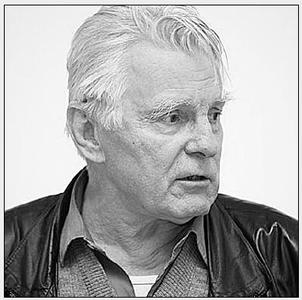
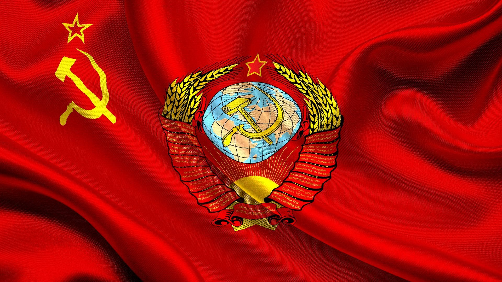
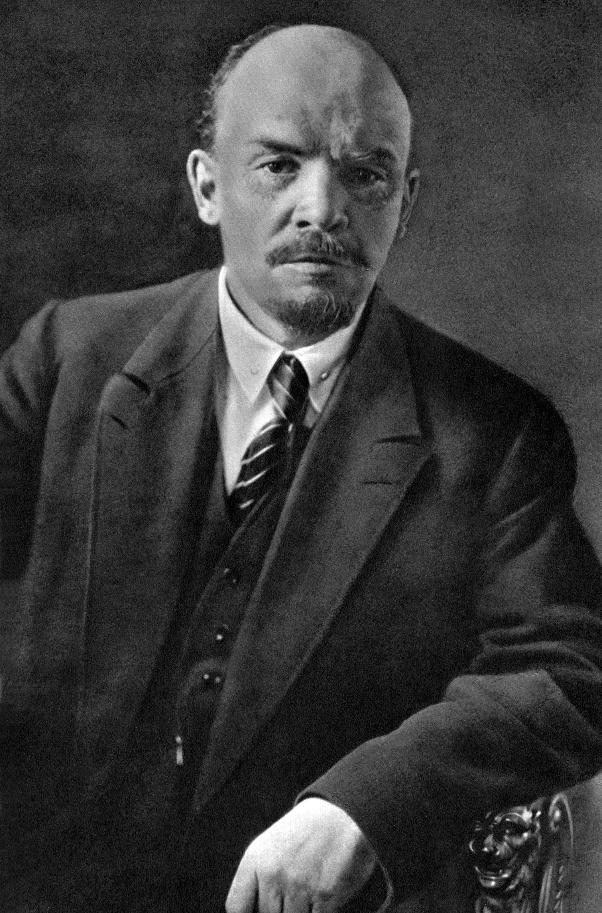

Коммунизм спасет нас, а индивидуализм погубит.
На главную

Народный артист России Юрий НАЗАРОВ в беседе с политическим обозревателем "Правды" Виктором КОЖЕМЯКО
Он не только талантливый актер, сыгравший в кино более двухсот ролей. Он также человек беспокойной, ищущей мысли. Сколько знаю его, Юрий Владимирович Назаров постоянно в раздумьях. О непростых проблемах нашего прошлого и современности, о темах социальных, идеологических, философских, привлекающих своей актуальностью. Потому каждая встреча с ним для меня по-особому интересна и дорога.
А еще дорог он мне своей верностью всему лучшему, что воспитывали в нем советская жизнь и советская школа, начиная с трудного военного детства в Сибири. Многие поспешили отречься от этого, едва провозглашена была предательская "перестройка". Тут же вперегонки начали проклинать "совковость" и "сталинизм", а заодно Родину, допустившую "октябрьский переворот". Ничего подобного от Назарова я не слышал и не читал у него. Нет, он не уходил от самых острых вопросов, но избегал поверхностного и примитивного подхода к ним, стараясь в поиске ответов докапываться до глубины, до корней.
Наверное, именно поэтому, когда на переломе 1990-х большинство его коллег по искусству, основательно зараженные антисоветизмом, отшатнулись от коммунистов и от "Правды", он наоборот - с подчеркнутой демонстративностью шел на наши праздники и встречи с читателями, чтобы выступать с любимыми стихами и прозой, делиться со слушателями самым заветным, побуждать их к размышлению и убеждать.
Большим другом нашей газеты Юрий Назаров остается до сих пор. Надеюсь, понятно мое желание еще раз поговорить с ним в преддверии этапной даты - 100-летия Великой Октябрьской социалистической революции.
Разговор состоялся пространный, занявший несколько часов, так что здесь публикую лишь часть его.
К вопросу о счастье
- Юрий Владимирович, я заметил и в прошлых наших беседах, и в основной книге вашей, что вы постоянно обращаетесь к теме счастья человеческого. В книге "Только не о кино" есть у вас целая глава под названием "Потолкуем о счастье", да и в других главах по-разному то же самое звучит. Почему?
- Наверное, потому, что вопрос о счастье - это ведь о смысле жизни вопрос. К чему стремиться, от чего может быть у человека самая большая радость...
- По-моему, это имеет прямое отношение к теме Октября 1917-го, которую я предложил вам для обсуждения.
- А как же! Я прочитал в "Правде" вашу беседу с писателем Захаром Прилепиным, который назвал Октябрьскую революцию величайшим событием во вселенской истории (номер за 7 - 8 февраля с.г. - Ред.). Согласен с ним. И множество есть оснований для такой оценки. Но самое главное, в моем представлении, связано как раз со смыслом жизни.
Какую цель предлагало человеку прежнее жизнеустройство, к которому теперь мы фактически вернулись? Хапужничество, личное материальное обогащение за счет других и любой ценой. Но разве в этом действительно высшая человеческая радость? Нет, извините, это радость животная. Вот свинья растолкала всех у кормушки, нажралась - и нет для нее большего удовольствия...
- Когда ныне обрушиваются на коммунистический, социалистический проект в нашей стране и твердят про его утопичность, то нажимают больше всего именно на низменную природу человека. То есть по сути получается, что при его врожденном индивидуализме он недалеко от той свиньи ушел. И главные удовольствия у них одинаковые. Ничего, дескать, с этим не поделаешь, потому и не следует природе мешать.
- Неправда это во многих смыслах. Свинское от рождения внутри человека может, конечно, быть. Однако есть и другое. Так вопрос в том, ЧТО развивает общество в человеке - худшее или лучшее, на что его настраивает и ориентирует, для чего условия создает и что поощряет.
Недавно я узнал про результаты социологических исследований, проведенных в разных странах. Выявлялось, от чего люди различных профессий получают наибольшее удовлетворение.
- И от чего же?
- От творчества! А уж дальше идут секс, обжираловка и все прочее. Да я и без каких-то специальных ученых исследований по себе знаю, что творчество способно совершать чудеса. Могу долго рассказывать об этом. Начиная с того, как перед ответственным экзаменационным показом в Щукинском училище я вдруг тяжко заболел. С утра в этот день все было для меня, как в тумане. Однако, преодолевая себя, решил все-таки не подводить товарищей.
Мы подготовили отрывок из "Тихого Дона", где я играл Степана Астахова. И вот, когда переодели меня в казачью форму, наклеили усы и вышел я на сцену, все будто преобразилось. Ясно вижу и слышу, с невесть откуда взявшимся подъемом играю...
- Отступила болезнь?
- Я сыграл весь наш отрывок (педагоги оценили хорошо), а затем, помню, в пустой аудитории свалился на какой-то кушетке и проспал крепчайшим сном до утра. Проснулся - совершенно здоровый!
- Характерный случай, показательный...
- Да что я. Вспомним академика Ивана Петровича Павлова. Он, находясь буквально на смертном одре, то есть умирая, до последнего вздоха диктовал свои наблюдения за собственным организмом. Для науки диктовал, продолжал свое многолетнее творчество, которое и составило счастье его жизни. - А Николай Островский, когда писал "Как закалялась сталь" и "Рожденные бурей"?
- Вот на каких примерах воспитывал коммунизм, определивший главной целью людей созидание - коллективное созидание справедливого общества. Он делал человека человеком, выводя его из животного мира. Это, замечу, еще с первобытного коммунизма началось, когда сообща приходилось людям охотиться на мамонта. Сообща, вместе, а не порознь, индивидуально. Общее гораздо сильнее и выше, нежели частное. Ну а потребление - это легче всего. И делать из него цель, смысл жизни - это несчастье. Да, истинное счастье в творчестве, будь то академик, писатель или простой работяга, какого сыграл, например, Баталов в фильме "Москва слезам не верит". Я в жизни знал и знаю таких работяг. Сколько замечательного сотворили для страны и геологи, и сталевары, и конструкторы-инженеры, и сельские механизаторы, и медики!.. Вот всех их поднял Октябрь. Им открыл широкую дорогу и перспективу для счастья.
Перспектива не хищникам и потребителям, а людям труда...